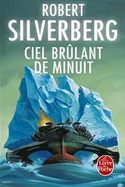
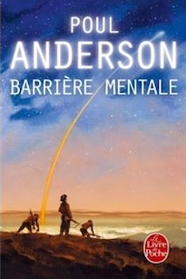
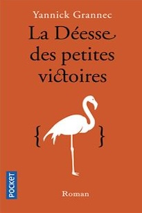
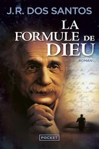
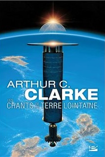
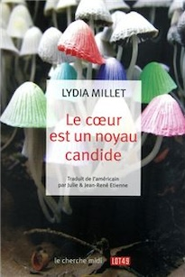
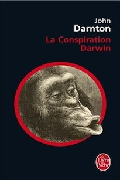
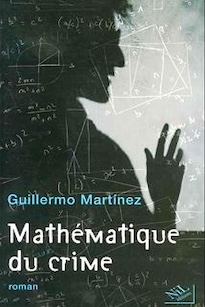
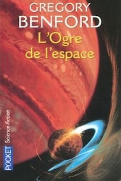
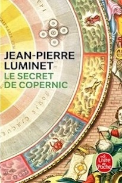
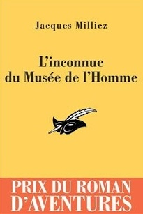
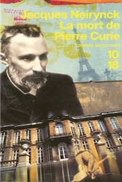
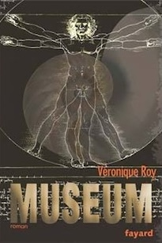
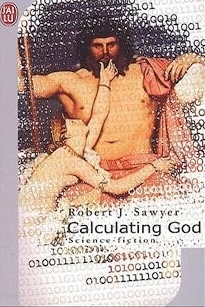
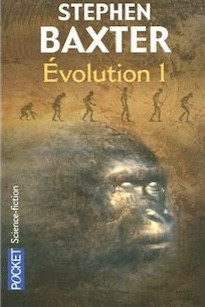
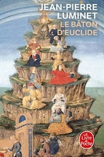
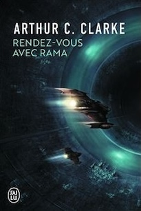
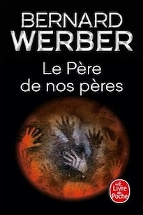
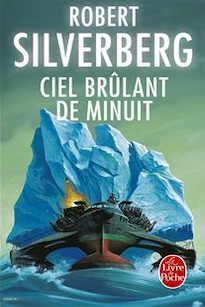
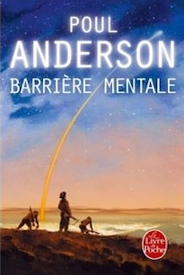
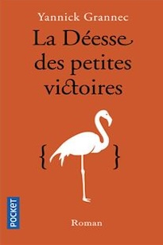
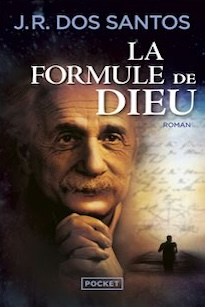
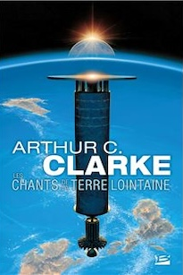
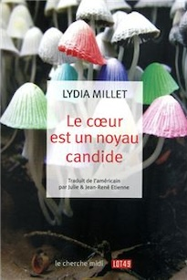
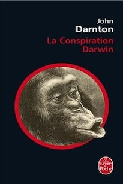
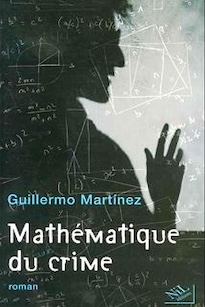
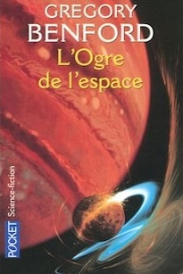
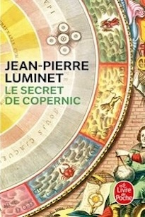
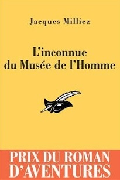
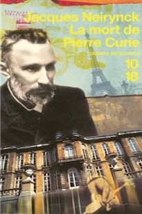
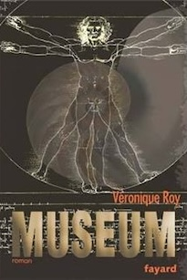
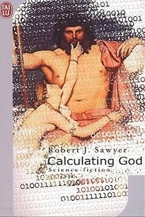
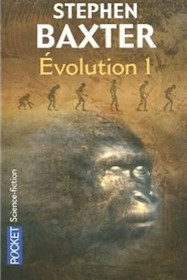
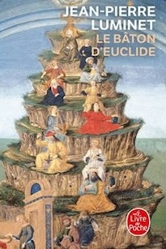
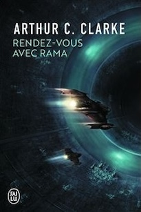
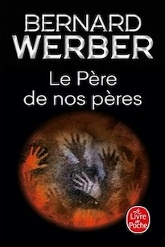
romans policiers, romans ou nouvelles de science-fiction, bibliographie... avec la science au premier ou au second plan. (format poche)
Titre
|
Auteur
|
Editeur
|
Genre | thème scientifique |
| Dark Matter
|
Blake Crouch | Totem | roman de science-fiction | recherche d'identité dans le multivers |
| L'oiseau moqueur
|
Walter Tevis | Gallmeister | roman de science-fiction | l'espèce humaine en voie d'extinction |
| Aurora
|
Kim Stanley Robinson | Bragelonne | roman de science-fiction | un long voyage vers une exoplanète |
| Le Congrès de futurologie
|
Stanislaw Lem | livre de poche | roman de science-fiction | satire sur l'avenir de la société |
| Terre errante
|
Liu Cixin | Actes sud | nouvelle de science-fiction | la recherche d'autres mondes |
| Shadrak dans la fournaise
|
Robert Silverberg | Robert Laffont | roman de science-fiction | une reflexion sur le pouvoir |
| Dans la toile du temps
|
Adrian Tchaïkosky | Denoël | roman de science-fiction | le choc des civilisations |
| Juste à temps
|
Philippe Curval | livre de poche | roman de science-fiction | les univers multiples |
| L'homme qui changea le futur
|
Anthony Peake | Hugo Doc | bibliographie | qu'est-ce que la réalité ? |
| Ciel brûlant de minuit
|
Robert Silverberg | livre de poche | roman de science-fiction | le réchauffement climatique |
| Barrière mentale
|
Poul Anderson | livre de poche | roman de science-fiction | intelligence et ordre social |
| La déesse des petites victoires
|
Yannick Grannec | roman historique | une approche de Kurt Gödel | |
| La formule de Dieu
|
José Rodrigues dos Santos | thriller scientifique | science et religion | |
| La théorie Gaïa
|
Maxime Chattam | thriller scientifique | expériences sur l'homme | |
| Les chants de la terre lointaine
|
Arthur C. Clarck | Milady (poche) | roman de science-fiction | le destin de l'humanité |
| Le coeur est un noyau candide
|
Lydia Millet | 10/18 | roman de science-fiction | le voyage temporel |
| La conspiration Darwin
|
John Darnton | livre de poche | roman historique | le mystère Darwin |
| Mathématique du crime
|
Guillermo Martinez | pavillons poche | roman policier | les séries mathématiques |
| L'Ogre de l'espace
|
Gregory Benford | roman de science-fiction | les trous noirs | |
| Le secret de Copernic
|
Jean-Pierre Luminet | livre de poche | roman historique | science et religion |
| L'inconnue du Musée de l'Homme
|
Jacques Milliez | le masque | roman policier | les manipulations génétiques |
| La mort de Pierre Curie
|
Jacques Neirynck | 10/18 | roman policier | science et histoire |
| Muséum
|
Véronique Roy | livre de poche | roman policier | créationnisme/évolutionnisme |
| Calculating god
|
Robert J. Sawyer | J'ai lu | roman de science-fiction | l'origine de la vie |
| La proie
|
Michael Crichton | techno-thriller (roman) | les nanotechnologies | |
| Evolution I
|
Stephen Baxter | roman historique | il y a 65 millions d'années... | |
| le bâton d'Euclide
|
Jean-Pierre Luminet | livre de poche | roman historique | le savoir universel |
| Rendez-vous avec Rama
|
Arthur C. Clarck | J'ai Lu SF | roman de science-fiction | technologie du futur |
| le père de nos pères
|
Bernard Werber | Albin Michel | roman historique | l'origine de l'homme |
"On peut définir la Science-Fiction comme la branche de la littérature qui se soucie des réponses de l'être humain aux progrès de la science et de la technologie."
(Isaac Asimov)
La SF permet aussi de voyager dans le temps et dans l'espace en créant des mondes inédits.
Elle fait naître un type de poésie particulier là où on ne l'attend pas...
Voici quelques classiques pour découvrir la science fiction... "Rendez-vous avec Rama" , " l'odyssée de l'espace ", la trilogie d' Arthur C. Clarke "Fahrenheit 451" de Ray Bradbury (une dictature brûle les livres) " Chroniques martiennes " de Ray Bradbury mais aussi " A l'Ouest d'Octobre " (poésie et science-fiction) " Le Monde inverti " de Christopher Priest ( " J'avais atteint l'âge de mille kilomètres. La ville avance et les guildes veillent...") mais aussi " le Prestige " " l'archipel du rêve" " Ubik " de Philip K. Dick mais aussi, " le Dieu venu du Centaure ", " glissement de temps sur Mars " " Tous à Zanzibar " de John Brunner ( la surpopulation ) " le troupeau aveugle " " Les Monades urbaines " de Robert Silverberg ( la Terre est peuplée de 70 milliards d'habitants dans d'immenses tours ) mais aussi, " L'oreille interne ", " l' homme dans le labyrinthe " , " les déportés du cambrien " ( la préhistoire est la meilleure des prisons ) " Ciel brûlant de minuit " ( le réchauffement climatique ) " Je suis une légende " Richard Matheson mais aussi " le jeune homme, la mort et le temps " " La grande porte " Frederik Pohl " Un paysage du temps " Gregory Benford " Le monde vert " Brian Aldiss ( l'humanité réduite à quelques tribus isolées au sein d'une immense et haute forêt ...) " Un cantique pour Leibowitz " Walter M. Miller ( science-fiction post-apocalyptique) " Le Cycle d'Ender, tome 1 : La Stratégie Ender " de Scott Card Orson mais aussi " les maîtres-chanteurs " " A la poursuite des Slans " de A. E. Van Vogt ( le thème des mutants...") " Sur les ailes du chant " Thomas M. Disch " L'homme démoli " Suivi de "Terminus les étoiles" Alfred Bester " La Patrouille du temps " Poul Anderson ( voyage dans le passé...) " Le Fleuve de l'éternité, tome 1 : Le Monde du fleuve " Philip José Farmer " Des milliards de tapis de cheveux " Andreas Eschbach " Spin " Robert Charles Wilson (le temps s'accélère...) Prix Hugo et Grand Prix de l'Imaginaire un inventaire des idées reçues sur la science-fiction: "La Science-fiction, idées reçues Stéphane Manfrédo (Le Cavalier Bleu 126p) |